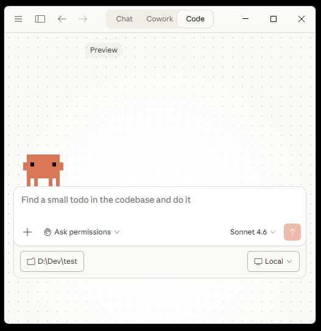

יוצרים פרסומות AI
עם Claude Code
המסע שלכם ליצירת פרסומות AI. בלי שורת קוד אחת. רק דמיון ושיחה.
הפרסומת הזו נוצרה עם Claude Code. הקונספט היה משפט אחד, Claude עשה את השאר: תסריט, סטוריבורד, קריינות, אנימציה ועריכה. היו כמה דיוקים ותיקונים בדרך, אבל בגדול, Claude הוביל את התהליך:
מה נלמד פה?
במסע הזה תלמדו לדבר עם Claude Code, עוזר AI שיודע לעשות כל דבר טכני בשבילכם. אתם לא צריכים לדעת לתכנת. אתם צריכים לדעת מה לבקש.
בסוף המסע תדעו להגיד ל-Claude ליצור פרסומת שלמה: מתסריט, דרך תמונות, קריינות ואנימציה, עד לווידאו מוגמר.
💡 לפני שמתחילים, מילה קטנה
במסע הזה תלמדו לבנות אוטומציה שיוצרת פרסומות וידאו עם Claude Code. התוצאה לא תמיד תצא מושלמת בפעם הראשונה, וזה בסדר גמור. כלי AI עדיין בהתפתחות, ולפעמים Claude יצטרך כיוון מכם, תיקון קטן, או ניסיון נוסף. אבל בדיוק בשביל זה אנחנו פה: ללמוד איך לדבר איתו, איך לכוון אותו, ואיך להוציא ממנו את המיטב. הדרך עצמה היא הלמידה.
⚠️ שימוש בשירותים עולה כסף. צריך מנוי Claude Pro (20$/חודש), ובמהלך המסע נשתמש בשירותי API שעולים סכומים קטנים. עלות פרויקט בודד של פרסומת: כ-2$-5$ בלבד (מעבר למנוי Claude). פירוט מלא בשלב 5.
מי עומדת מאחורי המסע הזה?
דנה אקרמן גרין / Digital Creator, מפתחת תוכנה, מנהלת קהילת Midjourney Israel, ויוצרת כלי AI יצירתיים. דנה מלמדת אנשים יצירתיים לרתום טכנולוגיה בלי לכתוב שורת קוד אחת.
מייסדת GenAI Creative, פלטפורמת AI יצירתית עם תמיכה מלאה בעברית, מתאימה במיוחד למתחילים.
מתקינים את Claude Code
הורדה, התקנה, והפעלה. כמו כל אפליקציה רגילה.
מה זה Claude Code?
Claude Code הוא אפליקציית דסקטופ שבה אתם מדברים עם Claude בצ'אט, והוא בונה דברים בשבילכם. כמו ChatGPT, אבל הוא יודע ליצור קבצים, להריץ קוד, ולבנות פרויקטים שלמים על המחשב שלכם.
📋 מה צריך לפני?
- מחשב עם Windows 10 ומעלה (או Mac)
- חיבור לאינטרנט
- חשבון Claude Pro או Claude Max (מנוי בתשלום)
שלב 1: הורידו את האפליקציה
היכנסו לדף ההורדה
גלשו ל-claude.com/download והורידו את הגרסה למחשב שלכם (Windows או Mac)
התקינו
פתחו את הקובץ שהורדתם והתקינו כמו כל תוכנה רגילה
התחברו
פתחו את האפליקציה והתחברו עם חשבון Claude שלכם
שלב 2: היכנסו ללשונית Code
בחלק העליון של האפליקציה יש שלוש לשוניות: Chat, Cowork, ו-Code.
לחצו על Code
זו הלשונית שבה Claude יודע לבנות דברים על המחשב שלכם
בחרו תיקייה
לחצו Select folder ובחרו תיקייה לפרויקט (צרו תיקייה חדשה בכל מקום שנוח)
זהו! אתם מוכנים לעבוד. תיבת הצ'אט מוכנה. כותבים מה שרוצים ו-Claude עושה.

מה זה Claude Code?
השיחה הראשונה עם Claude
Claude Code הוא כמו עובד סופר מוכשר. הוא צריך לדעת מה אתם רוצים, וזהו.
🗣️ פשוט אמרו שלום
זה כל מה שצריך לכתוב בהתחלה:
היי קלוד
🔐 הרשאות גישה לתיקייה
Claude יבקש אישור לגשת לתיקייה שבחרתם. לפני שתלחצו "אני מאשר", וודאו שאין בתיקייה:
⚠️ בדקו לפני שתאשרו
- קבצי סיסמאות
- מסמכים אישיים או עסקיים רגישים
- פרטי אשראי או פרטים בנקאיים
לכן יצרנו תיקייה ריקה וחדשה. בתיקייה ריקה אין מה לדאוג, ואפשר לאשר בביטחון.
אחרי האישור, Claude מוכן לעבוד. הוא לא קורא כלום בלי שתבקשו, הוא רק מחכה להוראה.
💡 טיפים לשיחה טובה
- היו ספציפיים : "תבנה לי אתר" פחות טוב מ-"תבנה לי דף נחיתה עם כפתור יצירת קשר"
- תנו הקשר : ספרו ל-Claude מי אתם ומה המטרה שלכם
- שאלו שאלות : אם Claude עושה משהו שאתם לא מבינים, תשאלו!
- תהנו : אין טעויות פה, רק ניסויים
מה הדרך הכי טובה לדבר עם Claude Code?
נותנים ל-Claude פרסונה
קובץ CLAUDE.md הופך את Claude למומחה קבוע בתחום שלכם
מה זה CLAUDE.md?
דמיינו שאתם שוכרים עובד חדש. ביום הראשון אתם נותנים לו דף תדריך: מי אנחנו, איך עובדים פה, מה הסטנדרטים. CLAUDE.md זה בדיוק זה. קובץ ש-Claude קורא אוטומטית בתחילת כל שיחה בפרויקט.
🎬 שלב 1: צרו קובץ CLAUDE.md עם הפרסונה
בקשו מ-Claude ליצור קובץ CLAUDE.md עם פרסונה של במאי פרסומות:
תיצור קובץ CLAUDE.md ותכתוב בו שאתה מומחה בבימוי פרסומות עם ניסיון ב: פיתוח קונספט, סטוריבורד, כתיבת תסריט, צילום, צבע ותאורה, עיצוב סאונד ואפקטים ויזואליים. אתה עובד עם כל הפורמטים: טלוויזיה, דיגיטל, רשתות חברתיות. תמיד חושב על קהל היעד ועל המסר של המותג. כל פרסומת חייבת להישמר בתיקייה נפרדת משלה. אם אינך בטוח על איזו פרסומת אנחנו עובדים כרגע, שאל אותי לפני שאתה עושה כל פעולה. תכתוב את הקובץ באנגלית
🔍 איך זה נראה בסוף?
מהרגע הזה, בכל פעם שתפתחו את הפרויקט, Claude כבר יהיה "בתפקיד" של במאי פרסומות!
🧠 למה זה חשוב?
- בלי CLAUDE.md: קלוד הוא "עוזר כללי". עם CLAUDE.md: הוא מומחה בתחום שלכם
- הוא קורא את הקובץ בתחילת כל שיחה, לא צריך לחזור על עצמכם
- אפשר לערוך ולעדכן בכל זמן. Claude ישתנה בהתאם מיד
🔎 פקודת init
כשאתם מתחילים פרויקט קיים (כזה שכבר יש בו קבצים וקוד), כדאי להפעיל את הפקודה /init. זו פקודה מובנית ב-Claude Code שגורמת לו לסרוק את כל תיקיית הפרויקט ולהבין מה יש שם.
פשוט כתבו בצ'אט: /init
Claude יעבור על הקבצים, יבין את המבנה, ויוסיף את מה שגילה ל-CLAUDE.md. כאילו שכרתם עוזר חדש ונתתם לו שעה לקרוא את כל החומר לפני שהוא מתחיל לעבוד.
בפרויקט שלנו אנחנו מתחילים מאפס, אז לא חייבים את זה עכשיו. אבל לפרויקטים עתידיים עם קוד קיים, זה הצעד הראשון.
מה התפקיד של קובץ CLAUDE.md?
Skills: ללמד את Claude תפקיד חדש
כותבים פעם אחת מה לעשות. Claude יבצע בכל פעם שיצטרך.
⚡ מה זה Skill?
דמיינו שאתם מדריכים עוזר חדש: "כשמישהו מבקש שתכתוב תסריט לפרסומת, תעשה כך וכך, שלב אחרי שלב." כתבתם את זה פעם אחת במחברת שלו, ומעכשיו הוא יודע. Skill זה בדיוק הדף הרלוונטי במחברת. קובץ הוראות שמלמד את קלוד קוד מה לעשות בתרחיש מסוים.
💡 דוגמה קונקרטית: Skill בשם "script"
נגיד שיצרנו Skill בשם script. בלי ה-Skill הזה, בכל פעם שתרצו תסריט תצטרכו להסביר הכל מחדש:
"תחפש פרסומות מובילות בתחום, תסכם מה עובד, תכתוב תסריט מקורי ל-30 שניות, תחלק לסצנות, תוסיף הנחיות לצלם..."
/script
Claude יודע בדיוק מה לעשות כי לימדתם אותו פעם אחת. כל פרסומת עתידית מתחילה במילה אחת.
🚀 איך Claude מפעיל Skill?
זה הדבר החשוב ביותר להבין: Claude מפעיל Skill בשתי דרכים:
דרך 1: אתם מבקשים ישירות
כותבים script/ בצ'אט. Claude מבין שזו פקודה ומריץ את היכולת.
דרך 2: Claude מחליט לבד ✨
אתם כותבים "בואו ניצור תסריט" בלי שום פקודה. Claude קורא את ההוראות של ה-Skill, מבין שזה מתאים לבקשה, ומפעיל אותו לבד. אין צורך לזכור אף פקודה!
Skills הם הוראות שהמשמעות שלהן ברורה ל-Claude, לא רק מקשי קיצור. הוא יפעיל אותם כשהם רלוונטיים, גם בלי /.
🔧 איך Skill נראה מבפנים?
קובץ טקסט פשוט עם שם, תיאור, ושלבי ביצוע:
ה-description הוא מה שעוזר ל-Claude להבין מתי להפעיל את ה-Skill אוטומטית.
🧠 התוכנית שלנו
בסוף כל שלב נבקש מ-Claude לכתוב Skill לאותו שלב. בסוף המסע יהיו לכם:
script/
מחפש השראה וכותב תסריט מקורי
storyboard/
מייצר סטוריבורד עם Nano Banana 2 על fal.ai
voiceover/
כותב ומקליט קריינות עם ElevenLabs
animate/
הופך תמונות לקליפי וידאו עם xAI Grok
Remotion (Skill רשמי)
ספריית עריכת וידאו עם Skill רשמי מוכן להורדה
פרסומת הבאה? תגידו "בואו נעשה פרסומת" וזהו. Claude יפעיל את כל ה-Skills לבד.
איך Claude מפעיל Skill?
Claude מחפש השראה וכותב תסריט
אתם נותנים קונספט. Claude חוקר ברשת וכותב תסריט מקורי.
Claude = עוזר הפקה שמכין את הקרקע לפני הצילומים
כל במאי טוב מגיע לצילומים אחרי שחקר. Claude עושה את החקר בשבילכם: מחפש פרסומות מובילות בתחום, מנתח מה עובד ולמה, ואז כותב תסריט מקורי שמבוסס על מה שהוכח בשוק. אתם מגיעים עם קונספט, Claude מגיע עם תסריט מוכן לצילום.
🎬 תנו קונספט, Claude עושה את השאר
זה כל מה שצריך לכתוב. אתם יכולים לבחור כל קונספט שתרצו, זו רק דוגמה:
אני רוצה פרסומת לקרם Anti-AI. הקונספט: קרם שמורחים על הפנים והופך אותם ללא ניתנים לזיהוי על ידי אלגוריתמי AI. אווירה קולנועית ומסתורית, קצת פאנקית.
תחפש ברשת השראה מפרסומות קוסמטיקה ופרטיות דיגיטלית מ-2024-2026, אבל אל תעתיק שום קונספט קיים. אני רוצה משהו שיפתיע, לא פרסומת גנרית. תהיה אמיץ עם הבחירות הקריאטיביות: זווית מפתיעה, מטאפורה לא צפויה, נרטיב שגורם לאנשים לעצור ולחשוב. הימנע מקלישאות של פרסומות קוסמטיקה.
תכתוב תסריט מקורי ופרק ל-6 סצנות ויזואליות. כל סצנה חייבת להיות סצנת וידאו אמיתית עם תמונה, לא שקף טקסט בלבד. כרטיסי טקסט יכולים להופיע בין סצנות בלבד אם צריך. כל סצנה: עד 5 שניות, ללא קאטים, ללא ליפסינק וללא מוזיקה. תכתוב את התסריט באנגלית עם תגיות לכל אלמנט:
<image> תיאור התמונה שתפתח את הסצנה (לשלב הסטוריבורד) </image>
<video> מה קורה בסצנה, תנועת מצלמה (לשלב האנימציה) </video>
<voiceover> טקסט הקריינות לסצנה (לשלב הקריינות) </voiceover>
<editing> מעברים, כרטיסי טקסט וטקסט על המסך (לשלב העריכה) </editing>
צור תיקייה בשם anti-ai-cream בתוך תיקיית הפרויקט ושמור את התסריט לקובץ script.md בתוכה. כל הפלט של הפרויקט הזה ישמר באותה תיקייה.
Claude יחפש ברשת, יקרא, ויכתוב תסריט. התגיות שהוספנו יעזרו לקלוד להבין לאיזה חלק של התסריט להתייחס בכל שלב - יצירת תמונות, הוספת קריינות, הנפשה ועריכה.
💡 טיפ: עובדים על מותג אמיתי?
בדיוק כמו שביקשתם מ-Claude לחפש ברשת השראה לפרסומת, אפשר לבקש ממנו לחפש ולהוריד נכסים של מותג אמיתי שאתם עובדים עליו. לוגו, צבעי מותג, גופנים רשמיים. Claude ידע לאתר אותם, להוריד אותם לתיקיית הפרויקט ולהשתמש בהם בכל שלב. הכל בעזרת פרומפט אחד.
🌐 מה Claude עושה מאחורי הקלעים?
- מחפש פרסומות מובילות ומנתח מה עושה אותן מוצלחות
- מזהה דפוסי עריכה, אווירה וטון שמתאימים לבקשה שלכם
- כותב תסריט מקורי לחלוטין, בלי להעתיק
- מפרק ל-6 סצנות, כל אחת עד 5 שניות עם תנועת מצלמה פשוטה
💡 לא אהבתם? תנו פידבק
פשוט כתבו ל-Claude מה לא עבד. לדוגמה:
"התסריט טוב אבל לא אהבתי את הטקסטים בקריינות, תעשה אותם מצחיקים יותר"
אפשר להמשיך לדייק עד שהתסריט מרגיש בדיוק נכון.
⚡ עכשיו: צרו את ה-Skill הראשון, script
התסריט מוכן. עכשיו הפכו את כל התהליך לפקודה חוזרת:
תיצור Skill בשם script בתיקיית הפרויקט הנוכחי. תעיין ב-claude code guide ותיצור SKILL.md תקני שיודע לקבל קונספט, לחפש ברשת ולהחזיר תסריט מלא של 6 סצנות. כל סצנה: עד 5 שניות, ללא קאטים בתוך הסצנה. ה-Skill צריך ליצור תיקייה לפרסומת לפי שם הקונספט, ולשמור את התסריט לקובץ script.md בתוכה. כל הפלט של הפרויקט ישמר באותה תיקייה.
מעכשיו: script/ וקונספט. זהו.
📁 הקובץ נשמר בפרויקט בנתיב: .claude/skills/script/SKILL.md
💡 מה זה "claude code guide"?
בתוך Claude Code יש סוכן מיוחד שיודע הכל על היכולות העדכניות של Claude Code. הוא כמו עמית עבודה שמתמחה בתחום ותמיד מעודכן. כשאתם מבקשים מ-Claude "תעיין ב-claude code guide", הוא שואל את אותו עמית ומקבל הנחיות מדויקות ועדכניות, בלי שאתם צריכים לדעת כלום על הטכניקה מאחורי זה. אפשר גם לשאול אותו ישירות: "שאל את claude code guide איך עובדים Skills".
איפה נמצא קובץ ה-Skill של script שיצרנו? (רמז: תסתכלו בתיקיית הפרויקט שלכם)
מה זה API?
המילה שנשמעת מפחידה אבל ממש לא צריכה להיות
🍽️ API = מלצר במסעדה
דמיינו שאתם יושבים במסעדה. אתם לא נכנסים למטבח ומבשלים לבד, נכון?
אתם (הלקוח) ← אומרים למלצר (API) מה אתם רוצים ← המטבח (השרת) מכין את זה ← המלצר מביא לכם את התוצאה.
API זה בדיוק אותו דבר: דרך מסודרת לבקש שירות ממחשב אחר ולקבל תוצאה.
🔑 מה זה API Key (מפתח)?
חוזרים למסעדה: כשאתם יושבים, מקבלים מספר שולחן. המלצר לא יקח הזמנה בלי לדעת לאיזה שולחן להביא את האוכל ולמי לשלוח את החשבון. ה-API Key הוא בדיוק זה: מספר שמזהה אתכם, מאפשר לכם לקבל שירות, ומאפשר לשירות לדעת כמה לחייב.
בלי מפתח? המלצר מנומס, אבל לא יזיז אצבע. Claude יסביר לכם בדיוק איפה נרשמים ואיך מקבלים מפתח לכל שירות.
🛠️ ה-APIs שנשתמש בהם
- fal.ai (Nano Banana 2) : "המטבח" שיוצר תמונות סטוריבורד
- ElevenLabs : "המטבח" שיוצר קריינות בקול אנושי
- xAI Grok : "המטבח" שהופך תמונות לאנימציית וידאו
אתם לא צריכים להבין איך ה-APIs עובדים מבפנים. Claude כותב את כל הקוד. אתם רק צריכים לדעת שהם קיימים.
לעריכה הסופית נשתמש ב-Remotion: ספריית React שמאפשרת לבנות סרטוני וידאו בקוד. זה לא API, אין עלות, ו-Claude עושה את כל הקוד.
💰 כמה זה עולה?
שימוש ב-APIs עולה כסף, אבל הרבה פחות ממה שחושבים. הנה הפירוט לפרויקט בודד של פרסומת (6 תמונות, 6 קריינות, 6 קליפי וידאו):
| Claude Pro (מנוי חודשי) | $20/חודש |
| fal.ai Nano Banana 2 (תמונת 4K אחת, 6 פאנלים) | ~$0.15* |
| ElevenLabs v3 (6 קריינות קצרות, ~500 תווים) | ~חינם* |
| xAI Grok (6 קליפי וידאו, 6 שנ' כל אחד) | ~$1.80 |
| Remotion (ספריית React לעריכה, לא API) | חינם |
| סה"כ עלות API לפרסומת | ~$3-5 |
* fal.ai Nano Banana 2: ~$0.16 לתמונת 4K אחת (6 פאנלים). תשלום לפי שימוש, ללא מנוי. ElevenLabs v3: $0.21 לכל 1,000 תווים. פרסומת שלמה (6 סצנות, ~500 תווים סה"כ) עולה פחות מ-$0.11. בנוסף, ElevenLabs נותן 10,000 תווים/חודש בחינם, מספיק לעשרות פרסומות. xAI נותן $25 קרדיט בהרשמה, מספיק לעשרות פרויקטים.
המחירים נכונים למרץ 2026 ועשויים להשתנות.
מה הכי מתאר את API?
Claude מתקין Python וסביבה נקייה
אתם לא מתקינים כלום. Claude עושה הכל. אתם רק מבינים למה.
🧹 מה זה "סביבה וירטואלית"?
דמיינו שיש לכם סטודיו ליצירת אמנות. כל פרויקט צריך חומרים שונים: צבעי שמן, אקריליק, פסטל.
אם תשימו הכל באותה מגירה, יהיה בלאגן. סביבה וירטואלית (venv) זה כמו חדר נפרד לכל פרויקט. כל פרויקט מקבל את הכלים שלו. שום דבר לא מתערבב.
🚀 בקשו מ-Claude לעשות הכל
תתקין Python אם צריך, ותיצור סביבה וירטואלית (venv) נפרדת לפרויקט שלנו. את החבילות נתקין בכל שלב בנפרד לפי מה שנצטרך. תוודא שה-venv פעיל ומוכן.
Claude יתקין הכל לבד. אתם רק תראו מה הוא עושה ותאשרו כשהוא מבקש.
⚠️ Claude יבקש הרשאות, זה נורמלי לחלוטין
במהלך ההתקנה Claude יבקש אישור להריץ פקודות בתיקיית הפרויקט. תראו הודעות כמו "האם לאשר הרצת פקודה?". אשרו הכל. זה חלק מהתהליך. Claude מבקש רשות לפני כל פעולה כדי שתמיד תהיו בשליטה.
🐛 Claude עושה טעויות בקוד, וגם מתקן אותן לבד
כשClaude כותב קוד Python הוא עלול לטעות. זה לגמרי נורמלי. הוא יריץ את הקוד, יראה את השגיאה, ויתקן לבד. כל מה שצריך מכם: לאשר את השינויים שהוא מציע.
אפשר להגדיר אישור אוטומטי לכל הפעולות, אבל אם אתם מתחילים, מומלץ לאשר ידנית בינתיים כדי לראות מה Claude עושה ולהרגיש בשליטה.
💡 למה זה חשוב?
- בלי סביבה נפרדת: חבילות מפרויקט אחד יכולות לשבור פרויקט אחר
- עם סביבה נפרדת: כל פרויקט הוא עולם עצמאי
- אם משהו השתבש, פשוט מוחקים את הסביבה ומתחילים מחדש
למה צריך "סביבה וירטואלית" לפרויקט?
יוצרים סטוריבורד עם Nano Banana 2
התסריט כבר מוכן. עכשיו Claude מייצר תמונות פוטוריאליסטיות לכל סצנה.
🎬 מה זה סטוריבורד?
סטוריבורד הוא סדרת תמונות שמראות כל סצנה בפרסומת. אנחנו נשתמש ב-Nano Banana 2 של fal.ai ליצירת תמונה ריבועית אחת שמחולקת ל-6 פאנלים בגריד 2x3 (2 עמודות, 3 שורות), כל פאנל ביחס 16:9.
🔑 קודם: מפתח API של fal.ai
אני צריך מפתח API של fal.ai כדי להשתמש במודל Nano Banana 2 ליצירת תמונות. תסביר לי צעד אחרי צעד איך נרשמים, איך מוסיפים אמצעי תשלום, ואיך יוצרים מפתח API בחשבון. תן לי קישור ישיר לדף המפתחות.
Claude ינחה אתכם: נכנסים ל-fal.ai, יוצרים חשבון, מוסיפים כרטיס אשראי (pay-per-use, אין מנוי), ומקבלים מפתח.
🔐 שמרו את המפתח בקובץ env.
לא שומרים מפתחות ישירות בקוד. במקום זה, Claude ייצור קובץ env. שמרכז את כל המפתחות במקום אחד בטוח:
תיצור קובץ env. בתיקיית הפרויקט עם קבועים לכל מפתחות ה-API שנשתמש בהם במסע: FAL_KEY, ELEVENLABS_API_KEY. תוסיף גם env לקובץ gitignore כדי שהמפתחות לא יעלו ל-GitHub.
אחרי שקלוד ייצור את הקובץ, פתחו אותו בNotepad: לחצו ימני על הקובץ .env בתיקיית הפרויקט, בחרו "פתח עם" ← Notepad. תראו שורה כזו:
הדביקו את מפתח fal.ai אחרי סימן ה-=, שמרו, וסגרו. זהו.
📝 קלוד יוצר את הסטוריבורד
התסריט כבר מוכן מהשלב הקודם. עכשיו Claude יכתוב קוד שיוצר את תמונת הסטוריבורד:
חפש ברשת את התיעוד הרשמי של fal.ai למודל fal-ai/nano-banana-2 כדי לוודא שאתה משתמש ב-API הנכון. בנוסף, חפש באתרים רשמיים כיצד לכתוב פרומפטים פוטוריאליסטיים טובים עבור המודל הזה. תתקין את הספריות פייתון שצריך.
תכתוב קוד שקורא לAPI פעם אחת בלבד ומייצר תמונה אחת בגודל 4K שהיא סטוריבורד עקבי מהתסריט שכתבנו. התמונה תהיה ריבועית (1:1) ומחולקת ל-6 פאנלים בגריד 2x3 (2 עמודות, 3 שורות), כל פאנל ביחס 16:9, ללא שוליים ומסגרות. כל פאנל מייצג פריים פתיחה אחד מהתסריט. חשוב: אסור שיופיע שום טקסט בתמונות, ללא כתוביות, ללא כרטיסי טקסט, ללא שקפים. שלב העריכה יטפל בטקסט בנפרד.
תכתוב לAPI פרומפט בקובץ טקסט רגיל כך שבפעם הבאה נצטרך לשנות רק את הפרומפט. הקוד יטען את הקובץ וישלח לAPI.
תשמור את התמונה בתיקיית storyboard. המפתח בקובץ .env תחת FAL_KEY. אחרי שתסיים לכתוב את הקוד, הרץ אותו.
🐛 אם משהו לא עובד, Claude יתקן לבד
כשהקוד רץ, Claude עלול לפגוש שגיאה. זה נורמלי לחלוטין. הוא יראה את השגיאה, יבין מה קרה, ויתקן. כל מה שצריך מכם: לאשר את השינויים שהוא מציע. פשוט המתינו.
👀 עכשיו לכו לתיקייה ותסתכלו
אחרי כמה דקות, כשקלוד יודיע לכם שסיים, פתחו את תיקיית storyboard בפרויקט. תמצאו שם את תמונת הסטוריבורד. אם התמונה נראית טוב, מצוין. אם לא, תגידו ל-Claude מה לשנות ותבקשו ממנו להריץ שוב.
⚡ עכשיו: צרו Skill /storyboard
הפכו את כל התהליך לפקודה אחת לשימוש עתידי:
תיצור Skill בשם storyboard שמריץ את כל תהליך יצירת הסטוריבורד. תעיין ב-claude code guide ליצירת SKILL.md תקני.
בפעם הבאה שנרצה סטוריבורד לתסריט קיים: פשוט נכתוב storyboard/.
📁 הקובץ נשמר בנתיב: .claude/skills/storyboard/SKILL.md
פתחו את תיקיית הפרויקט. מה שם קובץ ה-Python שנוצר לסטוריבורד?
מייצרים קריינות עם AI
קלוד כותב את הטקסט ויוצר קריינות ב ElevenLabs
🎙️ מה זה ElevenLabs ואיך Claude משתמש בו?
ElevenLabs היא הפלטפורמה המובילה בעולם לסינתזת קול. יש לה מאות קולות ריאליסטיים בעשרות שפות, כולל עברית. Claude ייגש ל-API שלה, יכתוב את משפטי הקריינות בהתאם לתסריט שיצרנו, ויבחר קול מתאים לאווירה. הוא ישלח את הטקסט ל-ElevenLabs ויקבל בחזרה קובץ MP3 לכל סצנה. אתם לא כותבים שורה ולא בוחרים קול, Claude עושה הכל.
🔑 מפתח API של ElevenLabs
- היכנסו לדף: elevenlabs.io/app/developers/api-keys
- הירשמו או התחברו לחשבון
- לחצו "Create API Key", תנו לו שם כלשהו
- וודאו שמופעל Text to Speech בהרשאות
- העתיקו את המפתח
את המפתח תדביקו ב-.env תחת ELEVENLABS_API_KEY= בשלב הבא.
📝 Claude יוצר קריינות
Claude כבר כתב תסריט בשלב הקודם. עכשיו הוא ייצור ממנו קריינות:
לך לדוקומנטציה הרשמית של הAPI של ElevenLabs . תבנה סקריפט Python שמייצר קריינות באמצעות ElevenLabs API עם מודל V3. תיקח את התסריט שכתבת ותכתוב משפטי קריינות מתאימים לכל פאנל בקול המתאים לדעתך. תשמור כל קובץ MP3 בנפרד בתיקיית anti-ai-cream/voiceover ותתן סיכום של משך כל קריינות. המפתח בקובץ .env תחת ELEVENLABS_API_KEY.
שימו לב: לא כתבתם אף משפט קריינות. Claude כתב את הטקסט בהתאם לתסריט שהוא יצר. אם לא אהבתם משהו, פשוט אמרו לו לשנות.
💡 מה לשים לב
- סימני פיסוק שולטים בקצב : שלוש נקודות (...) = השהייה
- בחירת קול : ElevenLabs מציע מאות קולות, אפשר גם לשכפל קול שלכם
- שתיקה מכוונת : לא כל פאנל חייב קריינות. לפעמים שתיקה חזקה יותר
- מודל Eleven v3 עם Audio Tags : המודל החדש של ElevenLabs מבין תגיות בסוגריים מרובעים שמוכנסות ישירות בטקסט ומשנות את אופן הדיבור. לדוגמה:
[whispers] סוד קטן... [excited] והוא עובד!
קטגוריות נפוצות: רגשות[nervous] [calm] [sorrowful]— קצב[pauses] [rushed] [hesitates]— עצמה[whispers] [shouts]— טון[cheerfully] [deadpan] [playfully]. אפשר לשלב כמה תגיות באותו משפט - אתם מאשרים : Claude מציע, אתם אומרים "מעולה" או "תשנה את הטון של פאנל 3"
⚡ עכשיו: צרו Skill /voiceover
תיצור Skill בשם voiceover בתיקיית הפרויקט הנוכחי. תעיין ב-claude code guide ותיצור SKILL.md תקני. ה-Skill צריך: לקרוא את התסריט הקיים, לגשת לדוקומנטציה הרשמית של ElevenLabs API, לכתוב משפטי קריינות מתאימים לכל פאנל עם מודל V3 בקול שמתאים לאווירה, ולשמור כל קובץ MP3 בנפרד בתיקיית voiceover של הפרסומת. המפתח בקובץ .env תחת ELEVENLABS_API_KEY.
פעם הבאה: voiceover/ ומסיימים.
📁 הקובץ נשמר בנתיב: .claude/skills/voiceover/SKILL.md
אני רוצה שה-Skill של הקריינות תמיד ישתמש בקול ספציפי. מה עושים?
.claude/skills/voiceover/SKILL.md ומוסיפים את ההוראה שםתמונות שמתעוררות לחיים
קלוד מנפיש את הסטוריבורד לפי התסריט
🎬 מתמונה לסרטון
לפרסומת שלנו יצרנו תמונות סטוריבורד. עכשיו כל תמונה מתעוררת לחיים: יד שזזה, הבעה שמשתנה, אור שנע. זה מה ש-AI image-to-video עושה.
היום יש כמה מודלים שיכולים לקחת תמונה ולהפוך אותה לקטע וידאו קצר. כולם נגישים דרך API, כלומר Claude יכול להפעיל אותם בשבילכם ישירות מהפרויקט. בפרויקט שלנו נשתמש ב-Grok Imagine של xAI, שתומך ב-image-to-video ומייצר קטעים עד 15 שניות. מודלים נוספים כמו למשל : Kling, Veo (Google), ו-Seedance (ByteDance).
🔑 אין צורך במפתח חדש
נשתמש ב-fal.ai כדי להפעיל את Grok Imagine, כך שה-FAL_KEY שכבר הגדרתם בשלב הסטוריבורד מספיק. אפשר להתחיל ישר.
📝קלוד מנפיש את הסטוריבורד
Claude כבר מכיר את התסריט והסטוריבורד. הוא יחליט על תנועות מצלמה מתאימות לכל סצנה:
תבנה סקריפט Python שלוקח כל תמונת פאנל מהסטוריבורד והופך אותה לקליפ וידאו באמצעות Grok Imagine דרך fal.ai API. תחליט על תנועת מצלמה, קצב ומשך מתאימים לכל סצנה בהתאם לתסריט שכתבת. תשמור כל קליפ בנפרד בתיקיית anti-ai-cream/animated. המפתח בקובץ .env תחת FAL_KEY.
Claude יחליט לבד: דולי, push-in, מצלמה קבועה. הוא מבין מה מתאים לכל סצנה כי הוא כתב את התסריט.
💡 אתם עדיין הבמאי
Claude מציע, אתם מאשרים. אם משהו לא מתאים, תגידו:
- "תשנה את פאנל 3 למצלמה קבועה במקום דולי"
- "תאט את פאנל 5, אני רוצה יותר מתח"
- "תוסיף עוד שנייה לפאנל האחרון"
אתם לא צריכים לדעת מונחים קולנועיים. אפשר גם לומר "תעשה את זה יותר איטי" או "אני רוצה שירגישו עצב פה".
⚡ עכשיו: צרו Skill /animate
תיצור Skill בשם animate שמריץ את כל תהליך האנימציה מתמונות לקליפי וידאו. תעיין ב-claude code guide ליצירת SKILL.md תקני.
פעם הבאה: /animate ומסיימים.
📁 הקובץ נשמר בנתיב: .claude/skills/animate/SKILL.md
מה התפקיד שלכם בתהליך האנימציה?
עריכה סופית עם Remotion
מחברים הכל לסרטון מוגמר. Claude בונה לכם חדר עריכה
✂️ מה זה Remotion?
Remotion היא ספריית React שמאפשרת לבנות סרטוני וידאו בקוד. זה לא API ואין עלות נוספת. דמיינו Premiere Pro שבו במקום לגרור קליפים, Claude כותב קוד שמרכיב את הסרטון בדיוק כפי שאמרתם לו.
⚡ קודם: התקינו את ה-Skill הרשמי של Remotion
ל-Remotion יש Skill רשמי ל-Claude Code שמכיר את הספרייה לעומק. לפני הכל, בקשו מ-Claude להוריד ולהתקין אותו:
תחפש ותתקין את ה-Skill הרשמי של Remotion ל-Claude Code. תעיין בתיעוד ובאתר של Remotion כדי למצוא את הקישור הנכון.
Claude ימצא את ה-Skill הרשמי, יוריד ויתקין אותו. אחרי זה הוא יכיר את Remotion ברמת מומחה.
🎬 עכשיו: בקשו מ-Claude לבנות את הפרסומת
תבנה פרויקט Remotion שמרכיב את כל החומרים שיצרנו לפרסומת אחת. כל הקבצים נמצאים בתיקיית anti-ai-cream: 1. תשים את 6 קליפי הוידאו מתיקיית animated ברצף 2. תוסיף את קבצי הקריינות מתיקיית voiceover עם תזמון נכון 3. תוסיף מעברים חלקים בין הקליפים (fade) 4. תוסיף כרטיס סיום עם לוגו וטאגליין 5. תייצא ל-MP4 לתיקיית anti-ai-cream/output התוצאה צריכה להיות פרסומת של כ-34 שניות.
🖥️ צפייה בתוצאה
Remotion מגיע עם Studio לצפייה בזמן אמת:
תפעיל את Remotion Studio כדי שאוכל לצפות בתצוגה מקדימה של הפרסומת
🔄 התאמות ושינויים
לא מרוצים ממשהו? פשוט אמרו:
תשנה את המעבר בין פאנל 3 ל-4 ל-fade to black של שנייה אחת. ותוסיף טקסט שמופיע בפאנל 4 אחרי 2 שניות.
כמו לשבת עם עורך. רק שמבצע שינויים תוך שניות.
מה נכון על Remotion?
הפרסומת שלכם
עכשיו אתם יודעים הכל. הגיע הזמן ליצור פרסומת משלכם מאפס!
אתגר הבוס הסופי
בחרו מוצר או רעיון שאתם אוהבים, תנו ל-Claude קונספט, והוא יעשה את כל השאר:
- פתחו פרויקט חדש : תיקייה חדשה + CLAUDE.md
- תנו קונספט : "אני רוצה פרסומת ל..." (משפט אחד מספיק!)
- /script : Claude חוקר ברשת וכותב תסריט מקורי
- /storyboard : Claude מייצר סטוריבורד מהתסריט
- /voiceover : Claude כותב ומקליט קריינות
- /animate : Claude עושה אנימציה עם תנועות מצלמה מתאימות
- /render : Claude מרכיב לווידאו סופי
📋 רשימת מה שלמדתם
- ✅ מה זה Claude Code ואיך מורידים את האפליקציה
- ✅ איך נותנים קונספט ו-Claude עושה את השאר
- ✅ מה זה CLAUDE.md ואיך נותנים ל-Claude פרסונה
- ✅ איך יוצרים Skills: פקודות שמפעילות תהליכים בלחיצה אחת
- ✅ /script: Claude מחפש השראה ברשת וכותב תסריט מקורי
- ✅ מה זה API: המלצר שמביא הזמנות ממטבחים שונים
- ✅ למה צריך סביבה וירטואלית: חדר נקי לכל פרויקט
- ✅ /storyboard: Claude מייצר סטוריבורד עם Nano Banana 2 על fal.ai
- ✅ /voiceover: Claude כותב ומקליט קריינות עם ElevenLabs
- ✅ /animate: Claude עושה אנימציה לתמונות עם xAI Grok
- ✅ Remotion: ספריית React לעריכה עם Skill רשמי, חינם לחלוטין
סיימתם את המסע!
עכשיו אתם יודעים להשתמש ב-Claude Code ליצירת פרסומות AI.
הכלי הכי חזק שלכם הוא הדמיון שלכם.
רוצים לעבור שוב על החומר? אפשר לאפס הכל ולהתחיל מחדש: